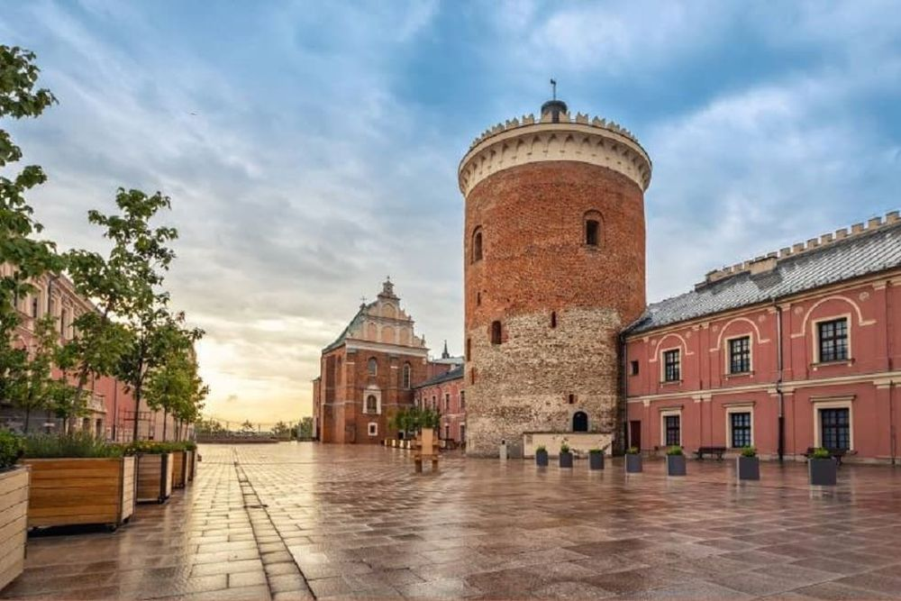

Descoperă Lublin - Orașul cultural și istoric din estul Poloniei
Lublin este un oraș vibrant din estul Poloniei, cu o bogată moștenire culturală și istorică:
-

Centrul vechi pitoresc
Străzile înguste și clădirile medievale din centrul vechi păstrează farmecul istoric.
-

Castelul Lublin
Castelul medieval oferă priveliști panoramice asupra orașului și găzduiește muzee interesante.
-

Lagărul de concentrare Majdanek
O vizită la acest loc memorial impresionant aduce omagiu victimelor Holocaustului.
-

Scenă culturală bogată
Orașul găzduiește festivaluri, teatre și evenimente culturale în diferite perioade ale anului.
-

Parcuri și zone verzi
Există parcuri frumoase, cum ar fi Parcul Litewski, unde poți relaxa în natură.
Concluzii
Lublin este un oraș cu o atmosferă aparte, care oferă o combinație interesantă de istorie și cultură modernă.